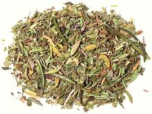

 |
Herbs de ProvenceFrance - Herbs de Provence | ||||
| Makes: Effort: Sched: DoAhead: |
1/2 cup * 10 min Yes |
Often called "traditional" by writers, this mix is an herb shortcut invented in the 1970s by spice wholesalers in France - see History. | |||
|
3 3 3 1 1 1/2 |
T T T t t t |
Thyme, dry Marjoram, dry Savory, dry Basil, dry Rosemary, dry Fennel seed |
There is no standard mix, but what we give here uses the most common ingredients in a fairly common ratio. Make: - (10 min)
|